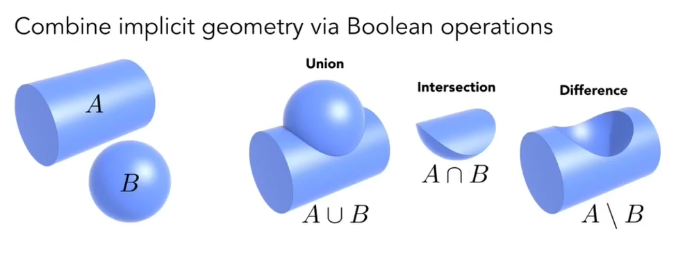

[图形]几何
几何，是研究空间结构及性质的一门学科。
Geometry 几何
几何形体非常复杂，如何储存它们也是一个问题
Implicit Representation 隐式表达
- 对空间中的点都可以给出它们之间的关系，就是隐式的几何表示
- 一般隐式的几何形体可以用一个或多个表达式来确定，所以采样会比较困难（每次采样都要按照公式算一遍）
- 不过如果是判断点在不在面上会很容易
- 举个栗子，球，x²+y²+z²=1，可以用公式隐式表示。更通用的，只要一个函数满足f(x,y,z)=0，找到所有等于0的点，它就是个隐式几何形体
Constructive Solid Geometry

根据基本几何形体的交集、并集、补集来创造新几何，也是隐式表达
Blending Distance Functions

对于一个几何形体，不直接描述它的表面，而是描述一个点到这个表面的最近距离。隐式表达
（搞不懂）
Fractals 分型
- 自相似（递归）
- 隐式
Explicit Representation 显式表达
- 空间中所有点的坐标都明确给出，或者能将点映射到空间上去，是显式几何表示
- 显式表示在采样时会容易
- 要判断某个点在不在表面上很困难
- 例子：
- Point Cloud：点云，只要我的点足够多，就是个几何体（
- Polygon Mesh（多边形面）：基于三角形/四边形
Bezier Curves 贝塞尔曲线
用一系列控制点（p0,p1,p2,···,pn）定义曲线
性质：
- 一定过起点和终点
- 曲线起始方向是p0到p1方向，曲线终点方向是p(n-1)到p(n)方向
- 仿射变换后的曲线不会变
- 曲线一定在控制点形成的凸包内
四个点形成一段贝塞尔曲线，多段曲线首尾连起来，叫做Piecewise Bezier Curves
de Casteljau Algorithm
显示定义
三个点就可以得到一条（Quadratic Bezier）曲线

- 按顺序将点连起来，每一条线段可以看作一个时间轴[0,1]
- 在轴上取一点t
- 例子中，对应到[b0,b1]线上的点是b01，对应到[b1,b2]线上的点是b11
- 将b01和b11连起来，将连起来的线也看做轴，在轴上取位置相同的t，对应到线段上的坐标就是曲线经过的点
- 枚举t就可以画出整条曲线

- 有更多的点就继续递归选取

（看不懂，nb就完事了）
任意阶数的贝塞尔曲线的任意时刻t对应的点所在位置，由伯恩斯坦多项式作为系数对给定控制点的加权。（？
Subdivision 细分
引入更多三角形
Loop Subdivision
（冷知识：这个loop是发明者的名字，不是循环的意思）

先1变4，再调整三角形位置让它更平滑

新顶点位置，找到临近2三角形的位置进行加权平均

n是新顶点的度（就图论那个度）
（不懂）
Catmull-Clark Subdivision
（emmm）
Mesh Simplification 网格简化
减少计算两，减少网格元素同时保持大致形状
比较像mipmap
Edge Collapsing 边坍缩
直接删边肯定是不行的，只有重要的边才可以删
Quadric Error Metrics 二次误差度量


（贪心，堆）
反正大概就是对形状影响小的多坍一点，对形状影响大的多坍一点